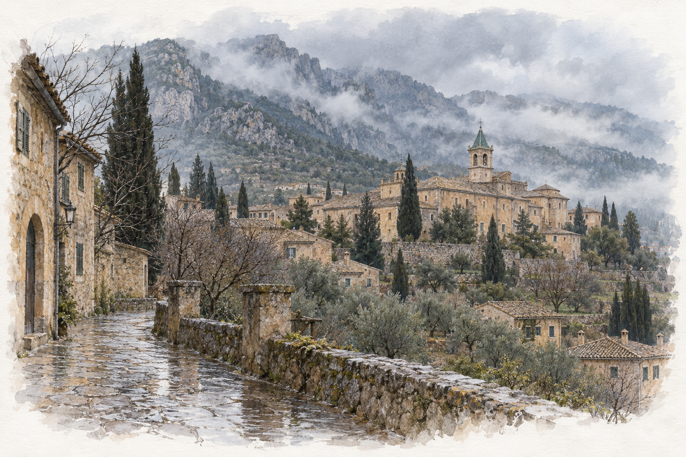
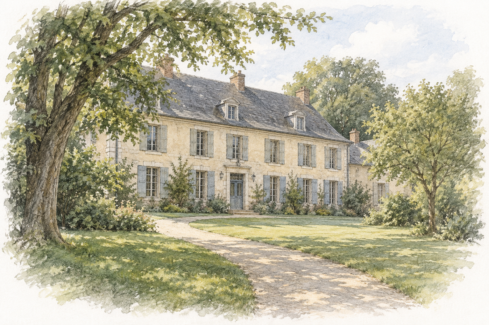
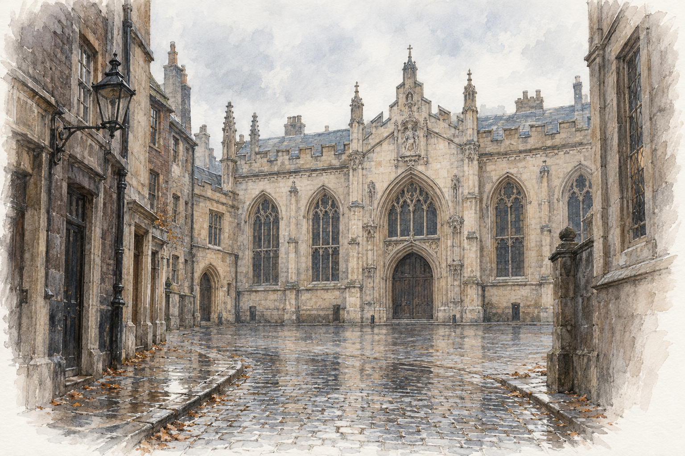
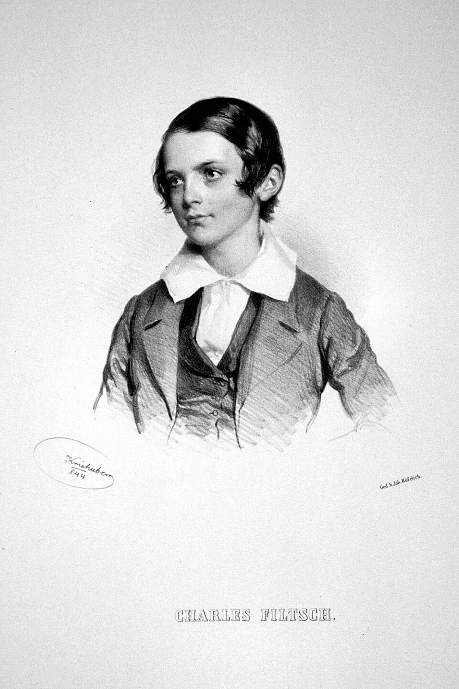

蕭邦的生活軌跡
蕭邦從 1831 年開始以巴黎為主要生活基地，直到 1849 年去世，時間約十八年。這段期間他多次旅行，也長住過鄉間；1830 年離開波蘭後，終生沒有再回到祖國。

- 波蘭的童年與求學
- 離國後在維也納停留
- 巴黎的成名與教學生涯
- 馬略卡島的冬季旅行
- 巴黎與諾昂往返
- 最後的英國之行，以及回到巴黎的生命末期
下表把地點、生活與作品放在一起。作品年份以創作或完成時間為主；部分作品歷經多年修改，不能完全歸於單一地點。
| 年代／年齡 | 地點與生活事件 | 重要作品對照 |
|---|---|---|
| 1810–1825 | 熱拉佐瓦沃拉、華沙。出生後隨家人移居華沙，童年開始學琴、作曲與演出。 | 早期《波蘭舞曲》；1825 年出版《c 小調迴旋曲》Op. 1。 |
| 1826–1830 | 華沙、短訪維也納。正式學習作曲，1830 年 11 月 2 日離開華沙。 | 兩首鋼琴協奏曲、Op. 2 變奏曲、Op. 4 奏鳴曲。 |
| 1831–1838 | 巴黎定居、成名，教琴、出版並進入藝術家與貴族沙龍圈。 | Op. 10、Op. 25 練習曲；《幻想即興曲》、第一號敘事曲、第二號詼諧曲。 |
| 1838 冬–1839 | 馬略卡島瓦爾德莫薩修道院，濕冷天氣使健康惡化。 | 完成《二十四首前奏曲》Op. 28；《雨滴》為第 15 首。 |
| 1839–1846 | 巴黎與喬治桑的諾昂莊園往返；除 1840 年外，多在暖季長住諾昂。 | 第二、三號奏鳴曲；第三、四號敘事曲；《英雄波蘭舞曲》、《船歌》。 |
| 1847–1849 | 與喬治桑分手；二月革命後赴英格蘭、蘇格蘭，回巴黎後去世。 | 《大提琴奏鳴曲》Op. 65 與最後的馬祖卡、小品草稿。 |
蕭邦的生活場景與時代背景
王室宴會與沙龍：巴黎仍有國王的年代
王室宴會與沙龍生活位於七月王朝的巴黎背景中。蕭邦確實曾為路易－菲利普的王室演奏。沙龍是貴族或富裕家庭邀集賓客的社交與音樂場合，並不等於大型公開音樂會；蕭邦尤其擅長在這類親密空間中演奏。
馬略卡島與諾昂
馬略卡島（1838–1839）：蕭邦與喬治桑及她的孩子赴西班牙過冬，曾住在瓦爾德莫薩修道院。他持續創作，並在島上完成《二十四首前奏曲》Op. 28，但整套作品並非全在島上從頭寫成。

諾昂（1839–1846）：返回法國後，他先在馬賽休養，再到喬治桑的諾昂莊園。這裡結合休養、朋友往來與創作，是成熟期的重要生活重心；《第四號敘事曲》、《第三號鋼琴奏鳴曲》與《船歌》皆與這段歲月密切相關。

1848 年革命、英國之行與生命末期
二月革命使巴黎音樂與社交活動受衝擊。1848 年 4 月，蕭邦在珍・史特靈協助下赴英格蘭與蘇格蘭，從事教學、演出與社交；11 月 16 日於倫敦市政廳完成最後一次公開演出。1849 年 10 月 17 日，他在巴黎去世，享年 39 歲。

作品導聆：依年代閱讀，也可依類型篩選
以下依約略創作年代排列；年份指創作、修訂或完成的大致範圍，並非出版年。作品編號也不等於創作先後。影片採外部連結，不嵌入播放器；已逐一核對的單支影片直接標出演奏者，其他則提供指定演奏者與作品的 YouTube 搜尋入口。
1829–1832・華沙告別與巴黎初期
鋼琴協奏曲
第二號鋼琴協奏曲｜Piano Concerto No. 2 in F minor, Op. 21
第一樂章由管弦樂先建立莊嚴輪廓，鋼琴進入後以花飾和分解和弦重新照亮主題；第二樂章的長旋律像獨唱，需留意裝飾音如何延後落點。終樂章以馬祖卡式重拍與節奏切分收束，讓炫技仍帶舞步感。
樂章與聆聽重點
- Maestoso：比較樂團的主題陳述與鋼琴的變形。
- Larghetto：聽旋律在停頓、倚音與內聲之間如何呼吸。
- Allegro vivace：留意民間舞蹈的重拍和華彩段落的回應。
鋼琴協奏曲
第一號鋼琴協奏曲｜Piano Concerto No. 1 in E minor, Op. 11
雖標為「第一號」，其寫作晚於 Op. 21。第一樂章把寬廣主題交給鋼琴作歌唱式延展；慢樂章以稀疏伴奏襯托柔軟旋律；終章的克拉科維亞克節奏，以短促重音和跳躍音型把獨奏與舞蹈感扣在一起。
樂章與聆聽重點
- Allegro maestoso：聽華彩是否仍清楚帶出主題線。
- Romanze: Larghetto：留意旋律與低音間留白形成的懸浮感。
- Rondo: Vivace：跟隨克拉科維亞克重音與回旋主題辨識結構。
夜曲
降 E 大調夜曲｜Nocturne in E-flat major, Op. 9 No. 2
主旋律不是原封不動地重複，而是不斷增添倚音、回音與更細的裝飾；左手近似搖擺的和弦提供穩定脈搏。聆聽時可分辨右手的自由 rubato 與左手規律是否仍能並存，末段的高音花飾尤其不宜蓋過旋律骨架。
練習曲
E 大調練習曲「離別」｜Étude in E major, Op. 10 No. 3
外段的旋律必須在和聲緩慢移動上保持長線，中央段卻突然改以半音階、重音與不規則和弦製造尖銳摩擦。它不是單純抒情小品：回到開頭時，原先平穩的旋律因中段的色彩記憶而顯得更脆弱，需聽出兩段觸鍵的對照。
練習曲
降 G 大調練習曲「黑鍵」｜Étude in G-flat major, Op. 10 No. 5
右手幾乎專在黑鍵上飛掠，真正的挑戰是使其聽來輕巧而非均質的噪點；左手旋律與和聲轉折才是方向感來源。可留意中段音域突然擴張，和聲短暫轉暗後再回到明亮主題，炫技因此有清楚的句法而非單一速度展示。
練習曲
C 小調練習曲「革命」｜Étude in C minor, Op. 10 No. 12
奔流主要在左手，但右手不是口號式旋律而是以短句、和弦與重音反覆推進。聆聽低音如何在快速分解和弦中勾出和聲方向；當右手主題再現時，左手並未真正安靜，兩個層次的壓力才構成結尾的緊張，而非單靠速度。
馬祖卡
A 小調馬祖卡｜Mazurka in A minor, Op. 17 No. 4
三拍子在這裡並不平均流動：重心常落在第二或第三拍，伴奏裡的短促停頓與模態和聲讓舞步似乎欲前又止。主題每次回來都帶著不同音域與裝飾，尾聲漸弱不是單純消失，而像把節奏與旋律都收進遠處的回聲。
即興曲
升 C 小調幻想即興曲｜Fantaisie-Impromptu in C-sharp minor, Op. 66
外段以右手四連音對左手三連音，形成不斷前傾的節奏錯位；中段轉為平穩歌唱，低音與旋律的呼吸完全不同。重回外段時，前面的甜美主題仍在耳邊，因而更能聽見急速音型不是裝飾，而是兩種時間感的衝突。
敘事曲
G 小調第一號敘事曲｜Ballade No. 1 in G minor, Op. 23
開場的宣敘式問句沒有立刻化成完整主題；之後兩個性格不同的材料反覆被改寫，速度與織度逐步加密。可聽出抒情第二主題如何在再現時被更厚的和聲包圍，最後急速尾聲並非新故事，而是前面動機被壓縮、加速後的爆發。
詼諧曲
B 小調第一號詼諧曲｜Scherzo No. 1 in B minor, Op. 20
開頭兩記近乎質問的和弦，立刻否定了「詼諧」應有的輕盈；急促主段在重音與休止之間撕裂，中央則引用波蘭聖誕歌曲〈Lulajże Jezuniu〉。返回時原來的材料更尖銳，聽者可留意演奏者如何在突然的極弱與爆發之間維持長篇比例。
詼諧曲
降 B 小調第二號詼諧曲｜Scherzo No. 2 in B-flat minor, Op. 31
低聲問句與隨後爆發的和弦，是全曲最重要的戲劇門檻；急板的奔馳中藏著可歌的內聲，中央 D 大調旋律則必須保持連續呼吸。回歸後的快速音型更密，最後的八度與和弦把前面被壓抑的重音集中釋放，結構遠比單純炫技複雜。
練習曲
A 小調練習曲「冬風」｜Étude in A minor, Op. 25 No. 11
右手快速音群像持續吹拂的風，但旋律重心常在拇指或較低聲部，不能把所有音彈成同一層。左手的大跳與低音重拍不只伴奏，也規劃和聲路徑；中段短暫鬆開後，原有音型以更濃的和聲回返，要求速度之中仍有聲部層次。
練習曲
C 小調練習曲「大洋」｜Étude in C minor, Op. 25 No. 12
雙手的大型琶音覆蓋整個鍵盤，卻需要聽見每一波的和聲頂點與低音方向。主題不是獨立歌唱線，而由和弦進行、重音與音域合成；當織度轉入大調或突然收窄時，波浪的質地已改變。結尾要有推力，也要讓低音落點清楚可辨。
敘事曲
F 大調第二號敘事曲｜Ballade No. 2 in F major, Op. 38
溫和的 F 大調搖籃式開頭與突襲般的 A 小調急板互相打斷，而非平順對比。每次回到抒情主題時，伴奏、音域與不安的和聲都已改變；終段將兩種材料壓縮成急速的轉調與斷裂節奏。聆聽時可特別追蹤平靜主題如何失去原有穩定。
1838–1841・旅行後與成熟期起點
前奏曲
E 小調第四號前奏曲｜Prelude in E minor, Op. 28 No. 4
右手旋律以極少音符前進，左手卻逐拍下沉、改變和聲，讓每一次停頓都帶有不同重量。其張力不靠音量，而靠半音移動與延遲解決；最後旋律幾乎退去，只留下和弦的呼吸。演奏時可聽踏板是否讓和聲相連，同時保留低音變化的輪廓。
前奏曲
降 D 大調第十五號前奏曲「雨滴」｜Prelude in D-flat major, Op. 28 No. 15
反覆的 A-flat 並不是寫實雨聲的證據，而是把全曲黏合的結構音：明亮外段中它像穩定脈搏，陰暗中段轉為低沉重複，回歸時又留下陰影。聆聽時可比較同一音在不同音域、力度與和聲下的功能，避免把作品簡化為單一畫面。
波蘭舞曲
A 大調波蘭舞曲「軍隊」｜Polonaise in A major, Op. 40 No. 1
左手的節奏型提供典型波蘭舞曲骨架，右手和弦與八度則把公開性的氣勢推向前方；中段音域與質地轉暗，回歸主題時因此更顯寬闊。它可以有儀式感，但不必被演成機械進行曲；要聽出重拍之前的抬起與旋律句尾的空間。
鋼琴奏鳴曲
降 B 小調第二號鋼琴奏鳴曲｜Piano Sonata No. 2 in B-flat minor, Op. 35
四樂章並非鬆散拼貼：首樂章的短動機在推進與崩解之間擺盪，詼諧曲把跳躍節奏磨得鋒利，葬禮進行曲以簡樸和弦承載旋律，終曲則近似無旋律的疾風。聆聽整套時，可比較不同樂章如何處理低音、重音與突然的空白。
樂章與聆聽重點
- Grave – Doppio movimento：辨認開頭動機如何反覆被加速與切斷。
- Scherzo：聽跳躍重音與中段歌唱線的反差。
- Marche funèbre: Lento：留意三段式中大調中段如何改變步伐。
- Finale: Presto：像疾風的齊奏不宜被彈成厚重和弦。
幻想曲
F 小調幻想曲｜Fantaisie in F minor, Op. 49
作品以模糊的低音行進與宣敘式片段開始，並不急著給出可哼唱的主題；行進節奏、和弦塊與歌唱段落反覆被打斷、重新組合。中後段的聖詠式和聲帶來暫時凝聚，最後又回到不穩的推進。可聽其自由外形下如何由節奏動機維持方向。
夜曲
C 小調夜曲｜Nocturne in C minor, Op. 48 No. 1
開始的旋律有近似宣敘的沉著，左手和弦以緩慢步伐承托；中段轉為較明亮的聖詠式和聲，之後卻在逐步加厚的八度與重複和弦中推向激烈再現。可聽見裝飾在此已不是旋律外框，而是戲劇轉折的一部分；回歸主題時的厚度與節奏壓力改寫了最初的寧靜。
敘事曲
A-flat 大調第三號敘事曲｜Ballade No. 3 in A-flat major, Op. 47
開頭看似溫柔的舞曲節奏，很快被不規則重音與更緊的音型擾動；兩個主題並非戲劇化對立，而是在回返時逐步改變節奏與聲部位置。終段把前面較圓潤的材料切碎成急速片段，從內部提高張力。留意旋律何時從最上聲轉入內聲。
波蘭舞曲
A-flat 大調波蘭舞曲「英雄」｜Polonaise in A-flat major, Op. 53
開頭的上行和弦建立的是舞曲的抬步，而不是單一的英雄敘事；主題回來時，左手八度持續穿越鍵盤，右手則以和弦、旋律與裝飾疊出多層聲響。中段低音的持續節奏要有清楚脈搏，否則回歸主題的音域擴張便失去支點。
敘事曲
F 小調第四號敘事曲｜Ballade No. 4 in F minor, Op. 52
平靜的開場像在試探音程與和聲，主題隨後不斷被裝飾、移位並放入更密的複音關係。聆聽時不要只追最上方旋律：中低聲部常模仿、延後或抵觸主題，直到尾聲把長期累積的半音與節奏緊張一次釋放，形成蕭邦最精細的單樂章結構之一。
搖籃曲
降 D 大調搖籃曲｜Berceuse in D-flat major, Op. 57
左手幾乎不變的低音與和弦構成搖籃節拍，右手卻在其上做一連串愈來愈細的變奏：雙音、顫音、音階與裝飾輪流改寫同一輪廓。重點不在炫目的表層，而是底下節拍始終不斷；末段逐漸稀薄，像把先前累積的光澤慢慢收回。
鋼琴奏鳴曲
B 小調第三號鋼琴奏鳴曲｜Piano Sonata No. 3 in B minor, Op. 58
首樂章把堅定節奏與較柔和的第二主題編織在奏鳴曲結構中；短促詼諧曲之後，Largo 以遼闊旋律和長時間的和聲呼吸成為核心。終樂章重新聚集前面累積的能量，但不以單純速度取勝。整套作品可聽出動機如何在不同速度與觸鍵中保持家族相似性。
樂章與聆聽重點
- Allegro maestoso：追蹤第一主題節奏與第二主題歌唱性如何並置。
- Scherzo: Molto vivace：聽輕盈外段與較連貫中段的接縫。
- Largo：讓長旋律跨越伴奏的分解和弦，不把每拍切開。
- Finale: Presto non tanto：注意主題回返前的和聲蓄力與終止感。
馬祖卡
升 F 小調馬祖卡｜Mazurka in F-sharp minor, Op. 59 No. 3
作品以較粗獷的重音與開放音程起步，三拍子不時被停頓、延長與重音挪移改寫。中段的和聲走得更遠，右手旋律常被內聲或低音回應；回到開頭時，原有舞步不再完全相同。可把它當作對民間節奏的藝術化轉化，而非單純鄉村場景描寫。
夜曲
B 大調夜曲｜Nocturne in B major, Op. 62 No. 1
晚期的歌唱線不再只是旋律加裝飾：右手細小音符常與內聲、延留音和複雜和聲交織，左手的節拍也比早期夜曲更具彈性。中段短暫提高緊張後，回歸並未完全恢復原貌。聽時可追蹤最上聲以外的對旋律，並注意踏板如何讓色彩流動而不模糊聲部。
船歌
升 F 大調船歌｜Barcarolle in F-sharp major, Op. 60
六八拍的左手搖擺不是背景布料，而是持續改變和聲重心的水流；右手的雙音與裝飾旋律逐漸擴張成厚實聲部。中段的音域上升與和聲暫停，讓時間彷彿放慢；最後的華彩式段落回到主和弦時，仍保留最初搖晃節拍的記憶。
圓舞曲
降 D 大調圓舞曲「小狗」｜Waltz in D-flat major, Op. 64 No. 1
短小的主題在圓舞曲伴奏上快速旋轉，卻不是可任意加速的炫技小品；反覆段落之間的呼吸與低音重拍，決定它是否還保有舞步。中段旋律較歌唱，回到開頭後才顯出形式的精巧。可留意右手快速音型是否仍交代清楚句尾與和聲轉折。
圓舞曲
升 C 小調圓舞曲｜Waltz in C-sharp minor, Op. 64 No. 2
開頭的切分與停頓使圓舞曲重心不斷偏移，抒情的中段才暫時放開長線旋律；回到開頭後，前面的節奏不安更明顯。這首作品適合注意左手三拍是否平穩、右手是否敢在句尾稍作收束；過度平均會抹去其帶有即興感的呼吸。
波蘭舞曲
A-flat 大調幻想波蘭舞曲｜Polonaise-Fantaisie in A-flat major, Op. 61
開頭不像直接宣告舞曲，而以模糊和聲、停頓與自由節奏尋找重心；波蘭舞曲節奏要到較後面才逐漸成形。主題在不同音域與和聲背景中被拉長、斷開再接回，形成介於即興與結構之間的時間感。聆聽時要追蹤低音如何幫助自由段落重新落地。
大提琴與鋼琴奏鳴曲
G 小調大提琴奏鳴曲｜Cello Sonata in G minor, Op. 65
這不是鋼琴伴奏的大提琴小品：兩件樂器在首樂章交換動機，詼諧曲的短句互相拋接，Largo 讓歌唱線停留在細緻和聲上，終章再以較明確的節奏推進。聽時可比較大提琴何時領唱、鋼琴何時以內聲回應，避免只把它當作鋼琴獨奏的附屬作品。
樂章與聆聽重點
- Allegro moderato：聽兩件樂器如何接續而非重複動機。
- Scherzo：辨識斷奏節奏的問答。
- Largo：留意旋律下的和聲停留與呼吸。
- Finale: Allegro：觀察節奏推進如何把雙方帶向終止。
比較名家演奏：帶著問題聽
以下不是替演奏排名，而是提供同一作品的可聽比較軸線。先完整聽一版，再挑一小段來回切換，較容易辨認差異來自速度、踏板與聲部選擇，而非音量大小。
第四號敘事曲 Op. 52
Krystian Zimerman ↗ 與 Arthur Rubinstein ↗
從開頭到第一次主題展開，先比較兩人如何安排 rubato：句尾是否拉長、低音是否仍走向下一個和聲。再到尾聲，聽內聲模仿是否可辨，以及踏板換色是否讓複音保持透明；速度本身不是重點，主題轉化的層次才是。
夜曲 Op. 9 No. 2
Arthur Rubinstein ↗ 與 Maria João Pires ↗
比較同一旋律在第二、三次出現時，右手裝飾音是向前推、稍作延遲，或融入長線；同時聽左手和弦是否穩定而不僵硬。可特別注意高音花飾下的旋律輪廓，以及踏板是否保留和聲變化而不混濁。
第二號詼諧曲 Op. 31
Seong-Jin Cho ↗ 與 Arthur Rubinstein ↗
先比最初問句後的爆發：休止是否有張力、和弦是否被踏板連成一片。中央歌唱段則可聽旋律高點如何安排、內聲是否被照亮；回到急板後，再比較兩人如何以速度控制八度、重音和長段落的方向，而不是只比較快慢。
蕭邦珍愛的學生：菲爾奇的才華與早逝

卡爾・菲爾奇（Carl Filtsch，1830–1845）是蕭邦十分珍愛、寄予厚望的學生。1841 年來到巴黎後接受蕭邦指導；蕭邦為他安排平均每週三次、約一年半的課程。1843 年，兩人曾在私人音樂聚會中以雙鋼琴合作《第一號鋼琴協奏曲》Op. 11。
菲爾奇也作曲，留下即興曲、夜曲、馬祖卡、練習曲與《序曲與賦格》等作品。聆聽菲爾奇的作品 ↗
他在旅行期間病倒，赴威尼斯休養後於 1845 年 5 月 11 日去世，尚未滿十五歲。史料不足以證明其疾病由蕭邦傳染，也不足以確立其死亡與蕭邦、喬治桑後來分手之間有直接因果關係。
疾病與傳染：肺結核、霍亂及十九世紀的社會認知
十九世紀前半葉，歐洲城市同時面對長期流行的肺結核與突如其來的霍亂。人們已觀察到疾病會在家庭或社區接連出現，卻尚未普遍掌握病原與傳播途徑；遺傳、體質、氣候、環境惡臭與人際傳染都是當時可能的解釋。
肺結核
肺結核常被稱為「肺癆」。當時對是否傳染存在不同看法。今日已知活動性肺結核主要透過咳嗽、說話釋出的含菌微粒經空氣傳播；感染不等於立即發病，潛伏感染者不會傳染。蕭邦在世時尚無有效抗結核抗生素，休息、營養與氣候調養是常見處置。
霍亂與瘴氣說
霍亂可能因劇烈腹瀉、嘔吐與脫水迅速致命。巴黎在 1832 與 1849 年都有重大疫情，卻不能因此把蕭邦本人的疾病與霍亂混為一談。今日已知霍亂主要經污染的飲水或食物傳播；當時有影響力的「瘴氣說」則將疾病與腐敗物、污水、潮濕與不潔空氣相連。
蕭邦身後的轉變
- 1854 年：約翰・史諾調查倫敦霍亂病例與飲水來源。
- 1865 年：維爾曼以動物實驗證明結核病具有可傳播性。
- 1882 年：科霍宣布發現結核桿菌。
蕭邦於 1849 年去世，早於這些關鍵研究；電影中關於親密接觸、照護責任與傳染恐懼，應放在當時知識尚未確立、風險卻真實存在的條件下理解。
資料來源與年代說明
生活與旅行主要依據蕭邦研究機構及英國蕭邦協會年表；作品年代另參照作品目錄與出版資料。影片情節與對話屬戲劇呈現，本頁以可查的生平時序為主。
- The Fryderyk Chopin Society：生平概述 ↗
- 蕭邦作品目錄與創作年代 ↗
- 英國蕭邦協會：1848 年英國之行 ↗
- 波蘭國立蕭邦研究院：練習曲 ↗
- 波蘭國立蕭邦研究院：作品目錄 ↗；其中的夜曲類型說明 ↗可核對 Op. 9、48、62 的作品脈絡。
編號提醒：Op. 編號大致反映出版安排，並不等於嚴格創作先後。例如第二號協奏曲比第一號先寫；《幻想即興曲》雖標 Op. 66，卻是 1830 年代作品。